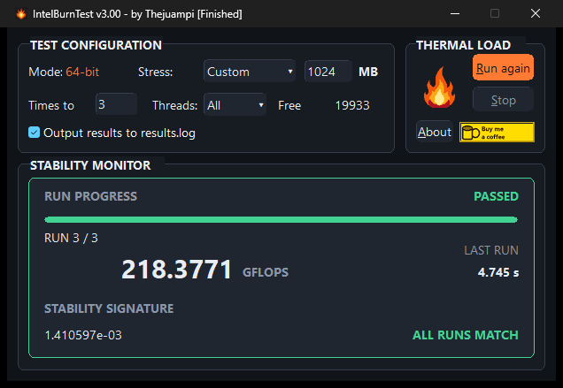
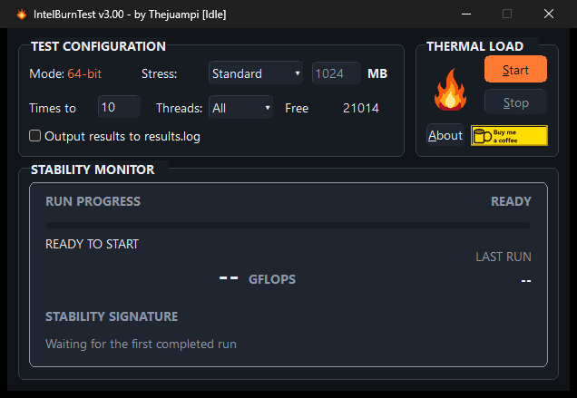
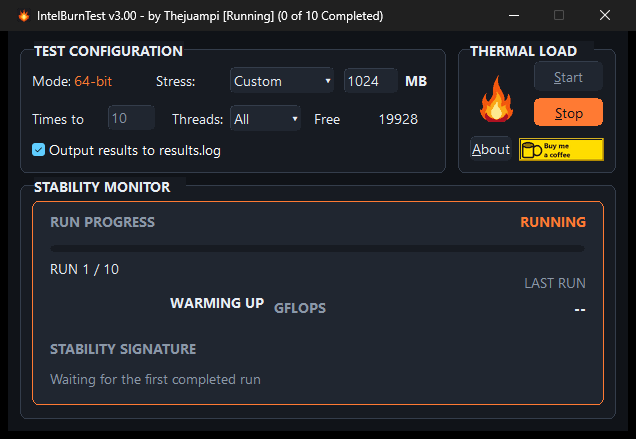

Put higher clocks to work
Found a little more speed in the BIOS? Test those settings under heavy CPU load before you call the overclock done.
v3.1.0 For the love of more performance
Chase more FPS. Push for a higher clock. IntelBurnTest helps you test your CPU overclock and catch unstable settings as you squeeze more out of your hardware.

Make every adjustment count
Your PC boots. The desktop looks fine. But can your overclock take the pressure? Give your CPU a hard workout with IBT, then use the result to decide what to try next.
Found a little more speed in the BIOS? Test those settings under heavy CPU load before you call the overclock done.
A higher clock or a lower voltage gives you a new setup to check. Run IBT again after a change to see how it holds up.
A failed test tells you those settings need another look. Make an adjustment and test again as you work toward an overclock worth keeping.
Choose the stress level, memory use, CPU threads, and number of runs. Start with a short check, then go longer as you refine your settings.
See how your settings hold up
Choose your test and hit Start. Follow the progress, see when it finishes, and know if it passed. A pass means your settings held up during this test; it's a useful checkpoint for your next adjustment.


Keep it in your tuning toolkit
Getting another year out of your current rig? Chasing the limit of a build you've saved up for? Keep IBT handy for the next adjustment. It's a 27 KB download for Windows that runs without installation, with a Linux build available too.
IntelBurnTest v3.1.0